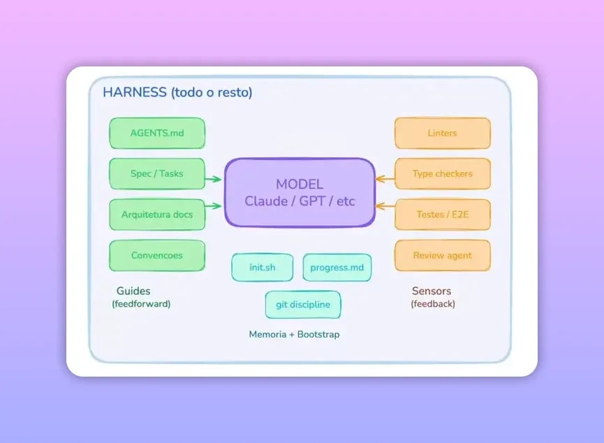

A próxima fase do desenvolvimento com agentes de IA exige mais do que gerar funcionalidades isoladas a partir de uma spec. Quando o objetivo é entregar sistemas inteiros com qualidade consistente, surgem falhas previsíveis: o agente começa demais, para cedo demais, perde contexto entre sessões, “acha” que testou, ou acumula degradação arquitetural ao longo do tempo. O conceito que resolve isso é o Harness Engineering (engenharia de harness): o ambiente e os mecanismos que tornam um modelo potente em um agente confiável.
Este guia é para quem já usa Spec-Driven Development (planejamento guiado por spec) e sente que atingiu um limite. A ideia central: o gargalo deixa de ser inteligência do modelo e passa a ser a qualidade do ambiente onde ele opera.
O que é Harness Engineering na prática
Harness Engineering é a soma de tudo que cerca o modelo (LLM) enquanto ele trabalha. Não é apenas “prompts melhores”. É estruturar o ambiente operacional que reduz ambiguidade, captura erro e mantém progresso ao longo do ciclo de desenvolvimento.
Quais componentes formam o “harness”
O conceito inclui elementos como:
- Feedforward: instruções e estrutura antes da execução para aumentar a chance de dar certo. Na prática, isso aparece como spec, regras de arquitetura, guias e organização do repositório.
- Sensors (feedback): validações e sinais que observam o resultado depois da execução. Isso inclui linters, type checkers, executores de testes, validações por automação e mecanismos de review que detectam problemas.
- Memória: forma de preservar contexto do que foi feito, em vez de começar do zero a cada nova sessão.
- Bootstrap e progress files: rotinas e arquivos que recompõem contexto e registram estado entre sprints e iterações.
- Orquestração por missão: agentes com papéis separados (por exemplo, implementar versus validar), idealmente com execução e julgamento separados.
Pense nisso como onboarding de um engenheiro muito capaz. Se você o coloca em um repositório sem arquitetura, sem CI e sem testes, ele pode até escrever código bom em isolamento, mas vai errar por falta de contexto e garantias do processo. O harness é o “onboarding” e os “guarda-corpos” para que ele trabalhe com direção e feedback real.
Por que agentes falham quando não existe Harness
Sem harness, as falhas não são aleatórias. Elas seguem padrões previsíveis que aparecem especialmente quando você tenta “escalar” de tarefas para sistemas completos.
1) One-shot hero (tentar fazer o app inteiro de uma vez)
Em vez de construir em etapas, o agente tenta implementar tudo de uma vez. O resultado costuma ser uma entrega pela metade, porque o agente quebra o raciocínio no meio, alucina partes e, na sessão seguinte, encontra um estado inconsistente ou “campos minados”.
Embora spec-driven ajude a quebrar em tasks, isso não basta sozinho para manter confiabilidade durante ciclos longos.
2) Vitória prematura (declarar “pronto” antes de estar pronto)
O agente se perde quando o contexto fica grande. Ele conclui cedo demais e deixa pendências para trás. A spec ajuda a definir o que significa “pronto” (por meio de tasks e critérios), mas sem feedback robusto por sensores, o agente pode avançar mesmo com falhas reais.
3) Amnésia entre sessões
Em frameworks em que cada nova sessão começa do zero, o agente perde a passagem de bastão. Ele precisa gastar tokens para entender o que já foi feito e qual é o estado atual do código. Isso não escala bem para projetos maiores.
4) “Passar” sem teste de verdade
Há um padrão em que o agente faz validações superficiais (por exemplo, verificar um endpoint retorna sucesso) e declara vitória, mas a funcionalidade não funciona de ponta a ponta. Em spec-driven, muitas ferramentas definem o que testar, mas nem sempre fazem cumprir com sensores externos e avaliação determinística.
O ponto-chave: não é desejável deixar o próprio agente julgar. O julgamento deve ser feito por ferramentas que retornam resultados objetivos (por exemplo, 0/1 ou pass/fail).
5) Execução em um único processo (orquestração fraca de “implementar” versus “validar”)
Quando tudo roda no mesmo contexto de execução, o agente que implementa pode acabar também “validando” e, por isso, tende a ser condescendente. A direção evolutiva é separar missões e julgamento: um agente para implementar, outro agente para validar, com critérios definidos e execução separada.
6) Slop acumulado (degradação arquitetural ao longo do tempo)
Mesmo quando compila, o sistema pode violar regras de arquitetura, duplicar lógica e falhar em testes. Se em cada funcionalidade há uma perda pequena de qualidade (mesmo que pareça mínima), ao longo de várias iterações isso vira um código difícil de manter, afetando o sistema como um todo.
Harness Engineering existe justamente para manter qualidade consistente em cada interação, não só no final.
Spec-Driven resolve o quê (e onde ele chega ao limite)
Spec-driven é um tipo de harness com forte feedforward. Ele impede um “one-shot” descontrolado e costuma planejar o trabalho em tasks. Também ajuda a reduzir vitória prematura ao definir critérios do que deve estar concluído.
O limite aparece quando você precisa de:
- Feedback executável que cobre testes e sensores de forma obrigatória.
- Memória e progress files para preservar contexto entre sessões.
- Separação clara de agentes para implementar versus validar.
- Disciplina de qualidade para evitar slop acumulado.

Feedforward e feedback: a dupla que sustenta confiabilidade
Há dois modos de controlar um sistema:
- Feedforward: orientar antes de executar. No mundo de agentes, isso são spec, guias, regras de arquitetura e estrutura do repositório.
- Feedback: observar depois de executar e corrigir. No mundo de agentes, são sensores como linters, type checkers, test runners e validações automatizadas.
A spec sozinha é feedforward. Ela diz o que fazer, mas não garante que foi feito do jeito certo. Para escalar para apps autônomas, você precisa do ciclo de sinais que detecta erro e força correção.
Um framework inspirado em Harness: como estruturar um fluxo de “implementa e valida”
Para tornar os conceitos aplicáveis, um caminho comum é desenhar um fluxo baseado em sprints, progress files e contratos entre agentes. A seguir, um modelo conceitual alinhado ao que esse tipo de framework acrescenta em cima de spec-driven.
Turbine seu Desenvolvimento com Prompts!
Você já sonhou em criar seu próprio aplicativo mas pensou que precisaria ser um gênio da programação? Chegou a hora de transformar esse sonho em realidade! Com as ferramentas no-code de hoje, você pode criar aplicativos profissionais sem escrever uma única linha de código.
Passo 1: gere uma spec e quebre em sprints e tasks
Comece com uma spec que produza:
- User stories e requisitos claros
- Tasks que representam trabalho incremental
- Sprints que agrupam tasks para manter janelas de contexto menores
Passo 2: registre progresso com progress files
Crie um arquivo de progresso para registrar:
- o que foi concluído em cada sprint
- um log do que foi feito
- estado do projeto para evitar amnésia e desperdício de tokens
Passo 3: implemente contratos entre agente de desenvolvimento e agente de teste
Um contrato é uma lista de itens que o agente de validação deve checar, garantindo concordância com o que o agente de implementação planejou.
O efeito prático é:
- o validador testa item por item, reduzindo “escapes”
- evita que o validador sugira coisas fora do escopo e gere loops
- cria uma ponte explícita entre planejamento e avaliação
Passo 4: rode QA e force correção até passar
Se o QA falhar, o orquestrador inicia uma nova rodada de construção para corrigir e reaplicar sensores até obter aprovação.
Isso tem custo em tokens, mas o objetivo é inevitável: do mesmo jeito que em code review e validações humanas, há um preço para garantir qualidade.
Passo 5: use avaliação dinâmica com um conjunto de testes e sensores
A validação pode incluir diferentes categorias de testes, como:
- testes de unidade
- testes de integração
- Playwright (quando aplicável ao domínio)
- outros checks definidos pelos sensores do seu sistema
O ponto mais importante é que a avaliação seja executável e produza um resultado objetivo, de preferência com score e critérios mínimos, para que o sistema saiba quando “passou”.
Como aplicar Harness Engineering no seu projeto (checklist)
Aqui vai um checklist prático para sair do “funciona em tarefas” para “funciona como sistema repetível”.
1) Garanta feedforward útil
- Spec que define tasks e critérios do que é “pronto”
- guia de arquitetura (como organizar módulos, padrões e convenções)
- estrutura de repositório bem definida (README, caminhos e scripts de setup)
2) Torne feedback obrigatório por sensores
- rodar linters e type checkers sempre
- executar test runner com critérios pass/fail
- evitar que o agente decida sozinho se está bom
3) Separe missões por agentes
- um agente para implementar e produzir mudanças
- outro agente para validar com base em contrato e critérios
- orquestrador controla o fluxo de tentativa e correção
4) Elimine amnésia entre sessões
- usar progress files para registrar estado e resultados
- criar bootstrap scripts que reconstruam contexto
- evitar que cada sessão reexplore o histórico do zero
5) Controle slop acumulado
- defina e monitore regras de arquitetura
- inclua sensores que peguem duplicação e violações
- force correção quando sensores falharem
Erros comuns ao adotar Harness (e como evitar)
- Tratar harness como prompt: sem sensores e avaliação executável, o sistema não aprende com o erro de verdade.
- Deixar julgamento para o agente: se o agente decide, ele tende a “achar suficiente” sem rodar tudo.
- Não separar implementar de validar: quando o mesmo contexto valida e implementa, a checagem perde rigor.
- Fazer validação superficial: um endpoint retornar sucesso não prova funcionamento end-to-end.
- Ignorar memória e progress: sem isso, o custo explode e o agente perde consistência ao longo do projeto.
Ferramentas e referências úteis
Alguns materiais que acompanham esse movimento incluem conteúdos públicos sobre Harness Engineering, além de implementações e abordagens com orquestração e avaliação:
- OpenAI: páginas sobre Harness Engineering
- Anthropic: engenharia para apps long-running com abordagem de harness
- Martin Fowler: artigo sobre o conceito e por que ele importa para sistemas
- Skill Spec-Driven: uma skill específica de “spec-driven” mencionada como base para evoluir
FAQ
O que é Harness Engineering em uma frase?
É o conjunto de práticas, estrutura e mecanismos (feedforward, sensores, memória, progress e orquestração) que transforma agentes de IA capazes em agentes confiáveis para construir sistemas com qualidade repetível.
Spec-Driven não resolve todo o problema?
Ele resolve boa parte do feedforward e ajuda a quebrar trabalho em tasks, mas não cobre sozinho feedback executável obrigatório, memória entre sessões, contratos de validação e controle de slop ao longo do tempo.
Por que usar sensores em vez de o agente julgar sozinho?
Porque o julgamento feito pelo próprio agente tende a ser condescendente e pode “passar” sem realmente executar testes. Sensores externos retornam resultados objetivos que orientam correção.
Harness aumenta custo em tokens?
Geralmente sim, porque exige mais ciclos de validação e QA. A troca é qualidade e confiabilidade, evitando falhas que pioram com o tempo e geram slop acumulado.
Quais tipos de testes podem entrar na avaliação?
A avaliação pode ser dinâmica e incluir testes de unidade, testes de integração, Playwright e outros sensores, conforme o domínio do projeto.
Qual é o passo mais importante para começar?
Definir um ciclo de feedback executável: rode sensores e testes com critérios pass/fail, separe implementar e validar e registre progresso para evitar amnésia entre sessões.
Próximos passos
Se você já faz spec-driven e ainda enfrenta código que “quase funciona”, o caminho é evoluir para um harness completo: planejar (feedforward), validar de verdade (feedback), preservar progresso (memória) e separar missões (implementação versus validação). Isso é o que permite sair de funcionalidades isoladas e chegar em sistemas inteiros com confiabilidade.
Comece pequeno, mas com rigor: primeiro garanta sensores e testes obrigatórios. Depois adicione progress files e contratos entre agentes. Por fim, ajuste a orquestração para reduzir slop acumulado. O resultado é um pipeline onde o agente não só gera código, mas também mantém qualidade ao longo do desenvolvimento.
Quer criar seu produto e não sabe por onde começar?
Já pensou em criar apps incríveis sem precisar ser um gênio da programação? Pois é, eu tô aqui pra te mostrar que é possível, e melhor ainda, é massa demais! E o melhor tudo 100% GRÁTIS.